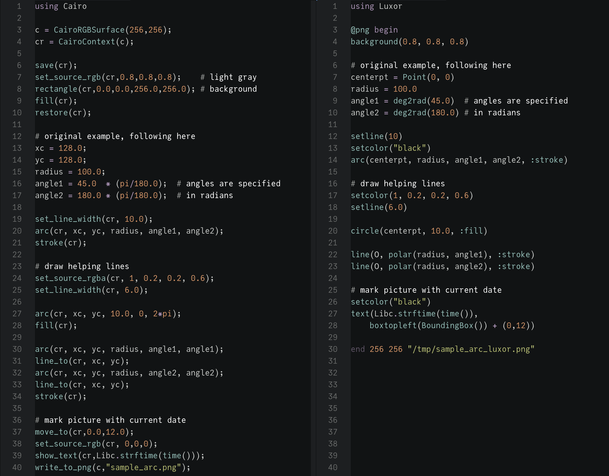
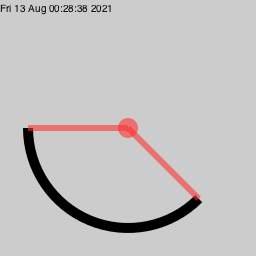

Luxor and Cairo
The aim of Luxor is to provide an easy to use "scripting-like" interface to Cairo.jl.
Luxor.jl doesn't implement every function provided in Cairo.jl. Cairo.jl doesn't implement every function provided by the Cairo API.
As an example of the difference between Luxor and Cairo, compare the two scripts below. Below left is one of the original example files in the Cairo.jl repository. On the right is a fairly literal conversion into a Luxor script.

They both produce this image:

For convenience, and to provide a simpler interface, Luxor introduces Points and dispenses with Contexts.
Both Cairo and Luxor use the same coordinate system (although the Luxor @- macros position the 0/0 origin at the center of the canvas). So although Cairo has to calculate the midpoint of the drawing in line 13, Luxor has to calculate the position of the top left corner in line 28.
A slighty more Luxor-idiomatic version of the code would be:
using Luxor@png begin background(0.8, 0.8, 0.8) setline(10) setcolor("black") arc(centerpt, 100, π/4, π, :stroke) setcolor(1, 0.2, 0.2, 0.6) setline(6.0) circle(centerpt, 10.0, :fill) poly([polar(100, π), O, polar(100, π/4)], :stroke) setcolor("black") text(Libc.strftime(time()), boxtopleft(BoundingBox()) + (0,12))end 256 256 "/tmp/sample_arc_luxor_2.png"If you want to know more about how drawing in Cairo (and by extension, Luxor) works, refer to the Cairo documentation.
Adding Cairo functions
If a Cairo function isn't yet supported in Cairo.jl or Luxor.jl, a temporary workround is to add a direct call to the Cairo library in your Luxor script.
For example, the Cairo function to return the extents of the current path when stroked (cairo_stroke_extents) isn't yet available in Julia's Cairo.jl, but you can add it with code like this:
using Luxorfunction stroke_extents() dx1 = Cdouble[0] dx2 = Cdouble[0] dy1 = Cdouble[0] dy2 = Cdouble[0] ccall((:cairo_stroke_extents, Luxor.Cairo.libcairo), Nothing, (Ptr{Nothing}, Ptr{Cdouble}, Ptr{Cdouble}, Ptr{Cdouble}, Ptr{Cdouble}), Luxor._get_current_cr().ptr, dx1, dy1, dx2, dy2) return BoundingBox(Point(dx1[1], dy1[1]), Point(dx2[1], dy2[1]))end